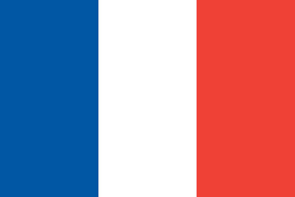

Projet Océanides
3 novembre 2015
Musée océanographique de Baden-Baden
Bienvenue au Musée Océanographique de Baden-Baden !
Le nouveau musée du collectionneur Frieder Burda, sur la Lichtentaler Allee, est un bijou exceptionnel dans le parc thermal de Baden-Baden. La structure de ce musée, baignée par la lumière du jour, conçue par l’architecte new-yorkais renommé Richard Meier,
Est aussi spectaculaire que la collection qui abrite des œuvres d’art uniques. Les 500 tableaux, gravures, sculptures et objets dessinent la « voie royale » de l’art des 100 dernières années.
Préparez votre visite
A tout moment, nous tenons à votre disposition les réponses appropriées à ces questions et à toutes vos autres questions.
En ce moment
Le Parc national de la Forêt Noire, premier et unique en son genre, est au rendez-vous en ce début d’année 2014 pour ouvrir ses portes
Billeterie
Das 5-Sterne Dorint Hotel Baden-Baden Maison Messmer ist so mondän wie die Stadt mit Ihrem südländischen Flair und ihrer sagenhaften Geschichte.
NOS ACTUALITES

Projet Océanides
3 novembre 2015
3

Lancement de l'expo La grande barrière de corall
28 octobre 2015
5

À la découverte du tatuage marin
14 octobre 2015
3

Sea Shepherd : la conser- vation marine en actions
6 octobre 2015
8